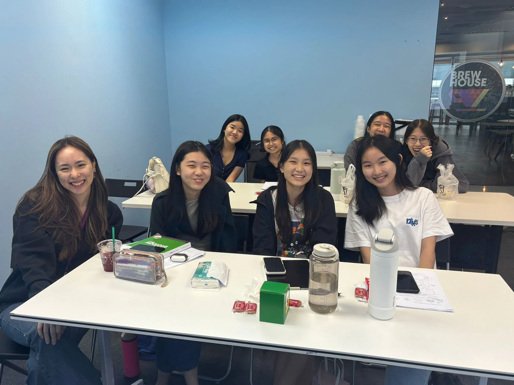
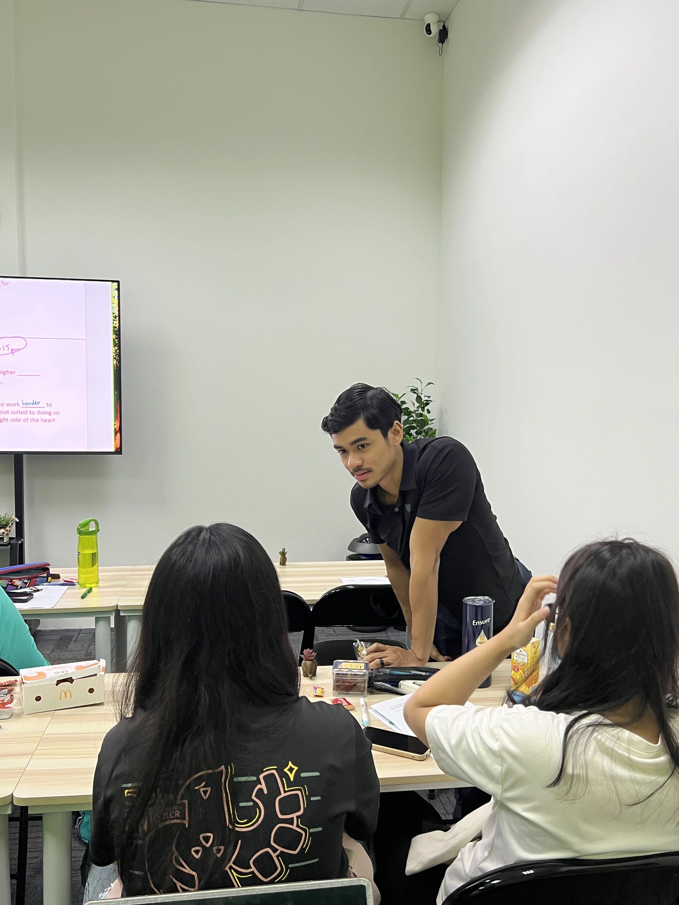
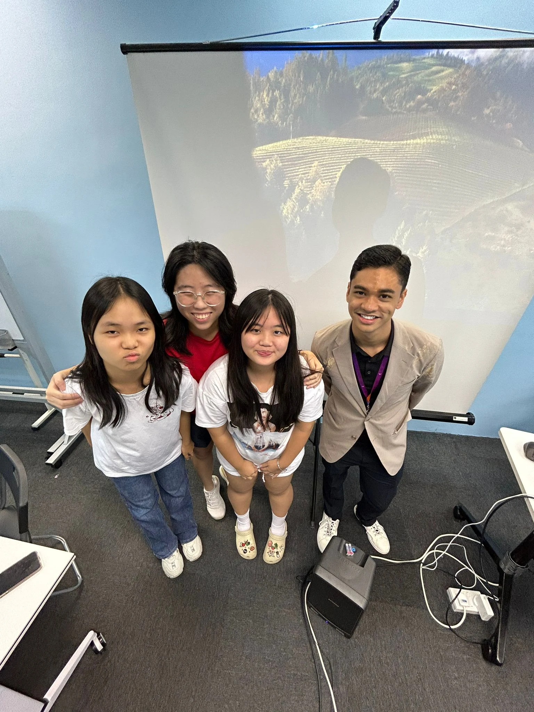
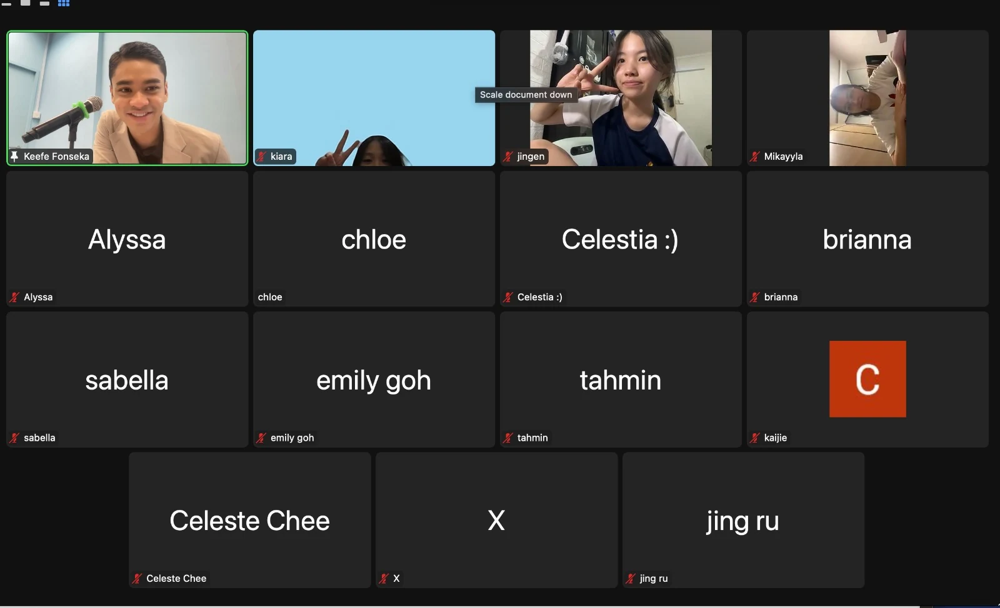
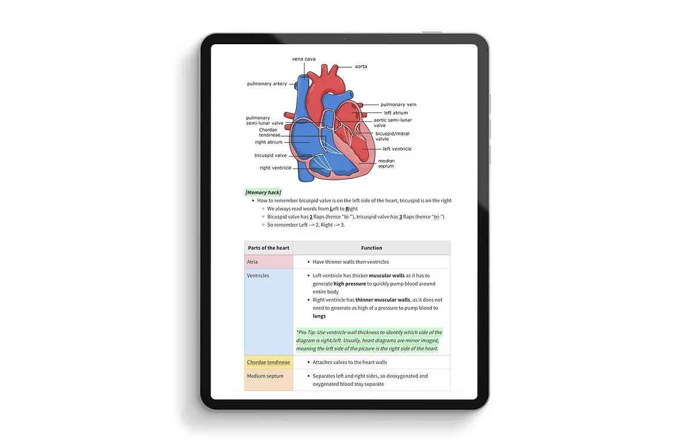

“I flunked my EOYs and don't even know where to start.”
Sec 3 Pure / G3 Biology Holiday Bootcamp
Fix Your Entire Sec 3 Biology Foundation in 4 Days
Limited time: Only during last two weeks of Nov/first two weeks of Dec.
Eight focused lessons to rebuild nine Sec 3 topics—from cells to homeostasis—before Sec 4 begins.
Swipe through the full plan
Everything You Need to Know About IntensiveFix
Graphic 1 of 10
A fresh start before Sec 4
Does This Sound Familiar?
“I've been meaning to start revising since the June holidays… and now it's already December.”
“School Bio skimmed through the content too fast. I don't understand concepts deeply enough.”
Sound familiar? After our 2-week IntensiveFix, they’re telling us:
From IntensiveFix students
Interactive, Patient, and Easier to Understand

A proven system
Here’s the Track Record
Students taught across 98 Singapore schools
Score A1, A2, or B3, despite 69% starting at B4 or lower
Average grade jump, roughly C5 to A2
Lessons to rebuild your entire Sec 3 foundation




Understand what went wrong
Turn Your EOY Result into a Sec 4 Recovery Plan
Mr Keefe breaks down the post-EOY situation and explains how IntensiveFix rebuilds the weak foundation before it follows students into Sec 4.
Included with the full programme
All IntensiveFix students will receive ThatBioTutor’s FastTrack System
Everything students would normally have to build themselves—already organised, explained, and ready to use.

Content & understanding
Visual Notes and Crash-Course Clips
Instead of digging through multiple sources and rewriting everything, students can search detailed notes and revisit concise lesson clips whenever a topic feels shaky.
Memory
Shortcuts and Ready-Made Flashcards
Confusing terms become memorable logic and shortcuts, then move into flashcards for long-term retention.
Answering skills
Exact Keywords That Score
The Commonly Asked Questions database shows students the phrasing and keywords examiners award marks for.
Support
Ask Questions Between Lessons
Students can message their tutor and get a clear, syllabus-accurate explanation the same day instead of waiting for the next class.
A focused two-week commitment
Is IntensiveFix Right for You?
This is for:
- Sec 3 Pure/G3 Biology students with a weak content foundation.
- Students who are borderline failing or failed their EOY Biology exam.
- Students who want to repair Sec 3 gaps before adding Sec 4 content.
- Students prepared to complete the full eight-lesson programme.
- Students who can attend physically or online from Singapore.
This isn’t for:
- Students taking Combined Science Biology rather than Pure/G3.
- Students looking for one-off, à-la-carte topic lessons.
- Students based outside Singapore.
- Students who aren’t ready to put in focused work across both weeks.
Your EOY Bio Grade doesn’t have to define your O Levels.
It can be demoralising to have scored poorer than expected for the Sec 3 end of year bio exam. But there is still time to turn things around.
We’ve had students come in during this period at F9, going all the way to an A1 in O levels.
What you need is a thorough content overhaul, fixing that weak sec 3 foundation, to supercharge and give you confidence heading into sec 4, to score the O level grade you’re truly capable of.
Ready to see what that feels like?